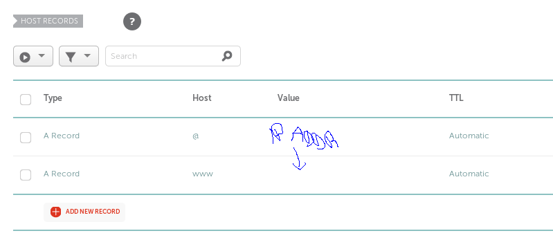

[3.4.18]
Setting Up A Webserver on FreeBSD 12.0-CURRENT
A project I've been meaning to accomplish before college is setting up a web server on my home server to host my blog. Now that I successfully got the wifi and ZNC working, I can get into some more exciting things!
My first task was to find out how to get a web server running on FreeBSD 12.0-CURRENT. This was pretty easy.
(make sure you have root permissions before proceeding)
portsnap extract
portsnap fetch update
cd /usr/ports/www/apache24/
sudo make install clean
You'll have to wait a while after that last command, so be patient. This should get apache24 installed on your server. Often it may stop and ask you a few questions while installing, hit OK or Y to continue with the settings. Seriously, it took around an hour on my computer, so find something entertaining to learn or do while you wait!
Once that's finished, sudo vim /etc/rc.conf and add
the line apache24_enable="YES". Save and quit.
Next, cp /usr/local/etc/apache24/httpd.conf
/root/httpd.conf.bak
Then, sudo vim /usr/local/etc/apache24/httpd.conf
Make ServerAdmin the email address you would like the server to send emails to if it encounters errors, and the ServerName as your IP address:port:
ServerAdmin you@emailaddress.com
ServerName Ip.Addr.Number:80
After setting that up, I thought it wise to set up security type things before I put any data onto the domain I bought. From research and talking with UTW, setting up HTTPS seemed like the best idea.
Before I get that set up, though, I needed to get my domain to stop pointing at NameCheap's servers and point to my server.
I went into NameCheap, found my domain, clicked on Advanced
DNS and under the first option, Host Records
you add 2 new A records.
One should have the host as @ and your IP address
following that, and the second one should have the host as www
with your IP address.
Make sure to delete the CNAME record that directs it to namecheap,
as well.

(pardon my terrible mouse-handwriting.)
Next is setting up the SSL/TTS security stuff. We're going to make a few directories, first.
mkdir /usr/local/etc/apache24/sites-available
mkdir /usr/local/etc/apache24/sites-enabled
Then we're going to add a line into our configuration file:
sudo vim /usr/local/etc/apache24/httpd.conf
and add IncludeOptional etc/apache24/sites-enabled/*.conf
underneath the ServerName line.
Now we need to enable the TLS module for Apache,
sudo vim /usr/local/etc/apache24/modules.d/020_mod_ssl.conf
and add these lines:
Listen 443
SSLProtocol ALL -SSLv2 -SSLv3
SSLCipherSuite HIGH:MEDIUM:!aNULL:!MD5
SSLPassPhraseDialog builtin
SSLSessionCacheTimeout 300
Save and quit, now head back to /usr/local/etc/apache24/httpd.conf
and uncomment the line LoadModule
ssl_module libexec/apache24/mod_ssl.so.
Now we need to create a TLS configuration file:
sudo vim
/usr/local/etc/apache24/sites-available/bsd.lan-ssl.conf
And add:

Don't forget to update the places that say yourdomain.com
with your actual domain name.
Finally, we can move on to Let's Encrypt! cd into /usr/ports/security/py-certbot
and sudo make install clean. After it compiles, run sudo
pkg install py27-certbot py27-acme.
Once complete, you can use this command to generate your certificate!
certbot certonly --webroot -w /usr/local/www/apache24/data/
-d yourdomain.com -d www.yourdomain.com
When generating my certbot certification, I ran into an error:
Detail: No valid IP addresses found for yourdomain.net
To fix the first one, I had to change a record from A + DNS to a singular A record. Next, I made sure to port forward ports 80 and 443 on my router.
If you're not sure how to port forward, find your local IP address and enter it into your browser. That should take you to your ISPs home page, where you can log in. From there, click around in settings until you find Port Forwarding options, and set up forwarding for HTTP(port 80) and HTTPS (port 443).
I also ran into the error that says, Error getting
validation data. This was fixed by making sure the CNAME
record in namecheap's domain records was deleted.
Now we need to update the certificates in the configuration file.
sudo vim
/usr/local/etc/apache24/sites-available/bsd.lan-ssl.conf
and add these certificate lines:
SSLCertificateFile
"/usr/local/etc/letsencrypt/live/yourdomain.com/cert.pem"
SSLCertificateKeyFile
"/usr/local/etc/letsencrypt/live/yourdomain.com/privkey.pem"
SSLCertificateChainFile
"/usr/local/etc/letsencrypt/live/yourdomain.com/fullchain.pem"
I got a few errors with these too, so make sure you have the right directories when you put them in the configuration file.
Then we'll create a symlink for the sites-enabled directory, so TLS can find your cert files.
ln -sf
/usr/local/etc/apache24/sites-available/bsd.lan-ssl.conf
/usr/local/etc/apache24/sites-enabled/
Make sure there are no syntax errors:
apachectl -t
then sudo restart apache!
sudo service apache24 restart
Now to see if it actually worked. Run sockstat -4 | grep
httpd, which should output something like this:
If that is what your output looks like, then time to celebrate!
My only error so far is that I cannot load my webpage from within my home network. I can access it outside of my home wifi network and others can access it as well, but other than that I have no access. Which is rather strange, but I'll figure that out soon.
Next steps: find out how to get my blog on this thing.
{thallia}